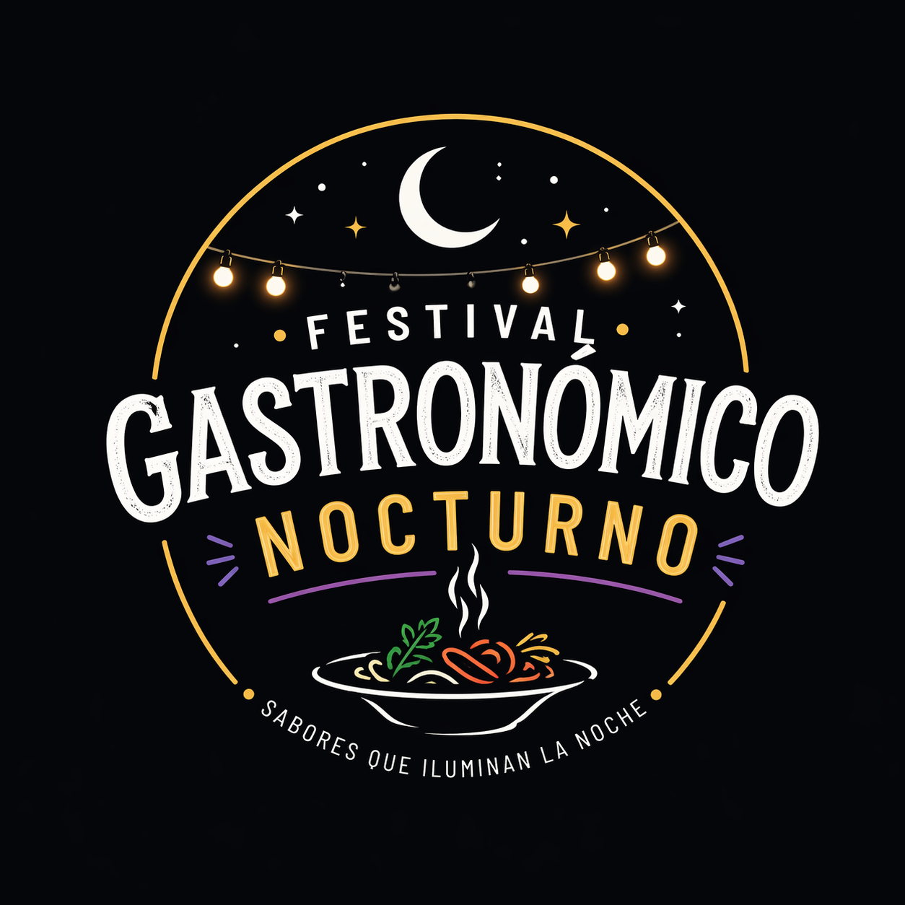
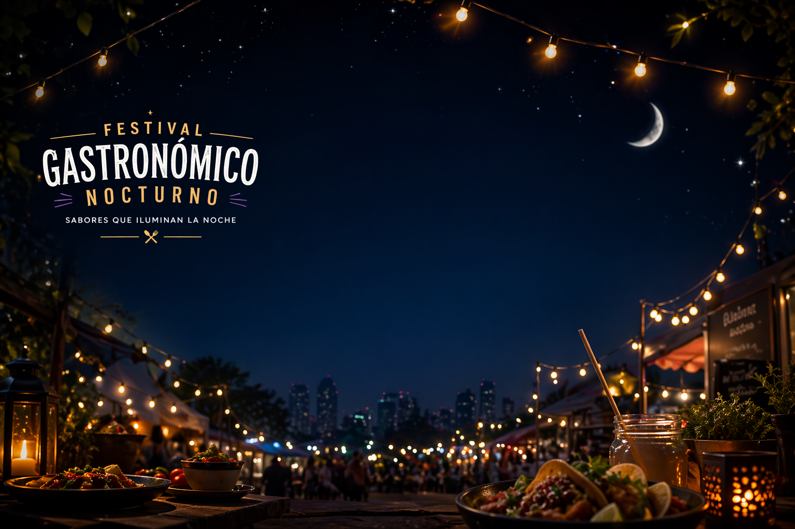

Cocina Caribeña
Disfruta de platos tradicionales del Caribe con sabores frescos y picantes.

¡Bienvenidos a nuestro festival Gastronómico nocturno, donde los sabores cobran vida bajo las luces de la noche!
Disfruta de una experiencia única llena de aromas, música y platos irresistibles que celebran la diversidad culinaria.
Recorre cada rincón, prueba algo nuevo y déjate sorprender en esta noche hecha para saborear sin prisa.
¡Prepárate para una experiencia culinaria única bajo las estrellas! Nuestro Festival Gastronómico Nocturno te invita a descubrir sabores exquisitos en un ambiente mágico. Próximamente, estaremos presentando una serie de eventos que no querrás perderte. Desde cenas temáticas hasta degustaciones exclusivas, cada evento está diseñado para deleitar tus sentidos y ofrecerte una noche inolvidable. Mantente atento a nuestras redes sociales y sitio web para conocer las fechas y detalles de nuestros próximos eventos. ¡Te esperamos para compartir momentos deliciosos juntos!
El Festival Gastronómico Nocturno es una celebración de la gastronomía que se lleva a cabo bajo el cielo estrellado. Este evento único reúne a chefs talentosos, amantes de la comida y entusiastas de la cultura culinaria para disfrutar de una experiencia gastronómica inolvidable. Durante el festival, los asistentes pueden degustar una variedad de platos exquisitos, participar en talleres culinarios, asistir a demostraciones en vivo y sumergirse en un ambiente festivo lleno de música y entretenimiento. El objetivo del festival es promover la diversidad culinaria, fomentar la creatividad en la cocina y brindar a los participantes la oportunidad de explorar nuevos sabores y técnicas culinarias. ¡Únete a nosotros para celebrar la magia de la gastronomía bajo las estrellas!
| Date | City | Schedule | Main Attraction |
|---|---|---|---|
| 12 May | Barranquilla | 6:00 PM | Street Food Show |
| 19 May | Cartagena | 7:00 PM | Live Cooking |
| 26 May | Santa Marta | 5:30 PM | Dessert Contest |
Disfruta de platos tradicionales del Caribe con sabores frescos y picantes.
Experimenta combinaciones innovadoras de cocinas de todo el mundo.
Dulces tentaciones hechas a mano por maestros pasteleros.
Cócteles y bebidas refrescantes para acompañar tu experiencia.
"Una experiencia inolvidable. Los sabores nocturnos me transportaron a otro mundo."
- Ana García"Los talleres fueron increíbles. Aprendí técnicas nuevas mientras disfrutaba de la música."
- Carlos López"El ambiente festivo y la comida excepcional hicieron de esta noche algo mágico."
- María RodríguezExplora nuestras imágenes de los eventos pasados y descubre la magia del Festival Gastronómico Nocturno. Desde escenas de cenas temáticas hasta momentos inolvidables en las demostraciones culinarias, nuestra galería te permite revivir los mejores momentos del festival. ¡No te pierdas estas imágenes que capturan la esencia del evento!
